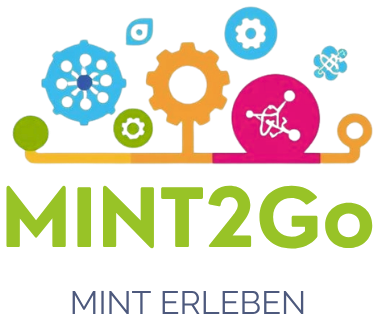

KI-Werkstatt
Bring dem Computer bei, Bilder oder Körperhaltungen zu erkennen. Du brauchst dafür keinen Code.
Ein Bildungsprojekt im Design von MINT2Go, nicht mit Teachable Machine oder Google verbunden. Alles bleibt auf deinem Gerät, es werden keine Bilder verschickt.
· So geht's mit Scratch (TurboWarp)